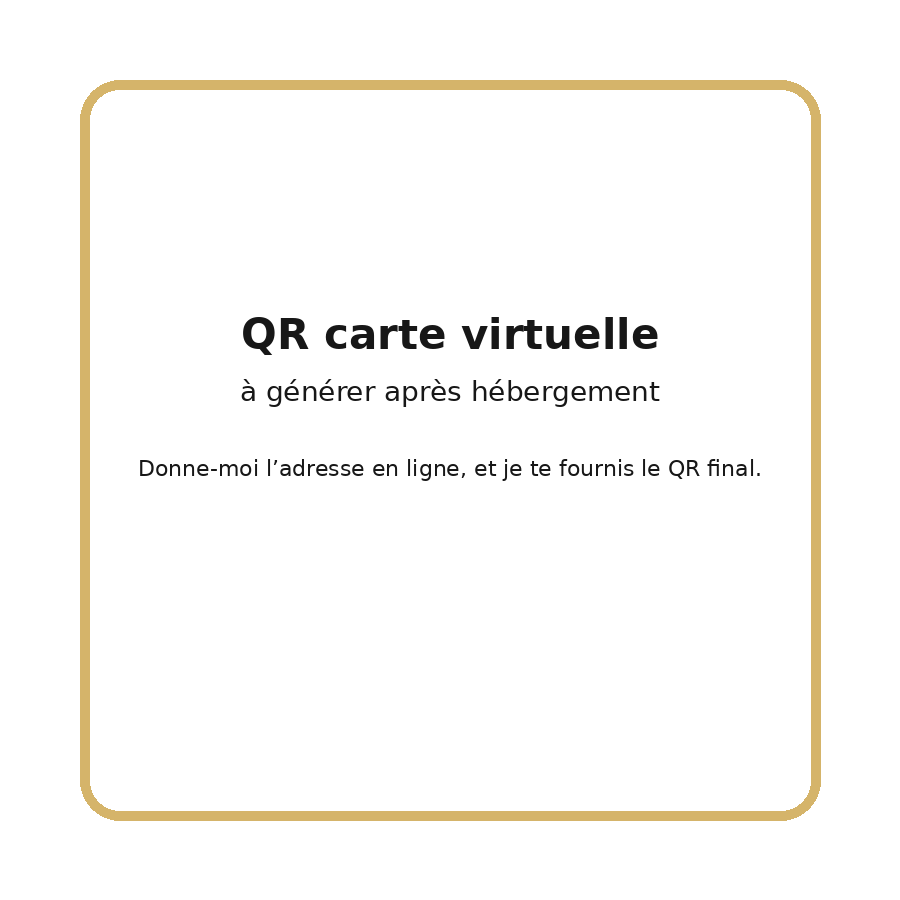

QR codes — Laurent Costa
Page pratique pour afficher ou imprimer les QR codes.
Ajouter aux contacts
Scannez pour enregistrer mes coordonnées.

Scannez pour ouvrir mon profil LinkedIn.
Applications

Scannez pour accéder à mes applications.
Carte virtuelle

À finaliser après mise en ligne de la carte.